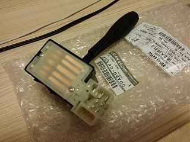

-
As many know, the 1988-89 300ZX headlight switch assembly differs from the 1984-87 switch, primarily in that the connectors on the 88-89 switch differ from the 84-87 switch, the turn signal cancelling mechanism is different between the two and, more to the point, the 88-89 switch is no longer available from Nissan and not available from the after-market.
I did some research and have confirmed that the switch contacts body (self contained) is the exact same between the 1989 Nissan 240SX and the 88-89 300ZX.
You are going to buy a complete, new, 1989 240SX headlight switch assy and remove the switch pack from it and transplant it over to the 88-89 headlamp switch.
First off, here's a pic of the back of the 88-89 headlight switch showing the connectors:
Here's a couple of pics showing the 1989 240SX switch (front, side/signal cancelling, back with connectors):

Here's a side-by-side of the switch packs out of the 240SX (left) and 300ZX (right) - identical:
Here are some part numbers for reference:
The OEM Nissan 1989 240SX switch is p/n 25540-44F00 ~ $132.63 (list)
Duralast SW2023; this is a Niles made switch like OEM (Autozone ~ $50.00)
Standard Motor Products DS549 (Rock Auto ~ $46.99)
Airtex/Wells 1S1888 (Rock Auto ~ $56.79)
You will remove the two main body retaining screws , plus the stalk wire harness retaining clip screw, from the back of the old switch. You must now try and very carefully pry the switch pack from the switch housing as there are five slots with retaining tabs. On an old switch with brittle plastic you may break the black switch body housing but don't panic; the two long switch pack retaining screws will secure the switch pack into the switch housing securely.
You may want to clean out some of the old grease from your old switch but that is not %100 necessary.
Here are some pics of inside the switch housing bodies where the mechanism activates the proper contacts for various lighting operations:
In closing, I verified operation of the 1989 240SX switch pack in a 1988 300zx where the headlight switch had failed and it performed like new.
This is a significant (and inexpensive) find for the do-it-yourselfer.
GregLast edited by Z_Karma; 10-12-2017, 01:59 PM. Reason: Added original images that were extracted from Gregs photobucket album and uploaded locally by Kaur, Thanks man. Deleted dead external photobucket links. -
Ah,that's what it was for. Good findShiro #443

-
Thank you for the excellent writeup, Greg!!Chicks dig me, rust fears me. -
Thanks for looking out -
the new switch that you are using .Is it Nissan oem?So the new whole switch wont work?Because I do like the new switch a bit more. -
The 240SX switch looks exactly like the brand new Nissan switch for my 94 B13 Sentra that I just installed last week. Stalk, box, and connections look identical.
1986 300ZX Turbo…sold
1990 Skyline GT-R…new money pit
2014 Juke Nismo RS 6-speed…daily -
I just performed this fix last night and can verify: works like new! I had a "no high-beams" problem and replacing the switch contacts fixed it. I used the "cheap" one on rockauto. And no, the new switch body will not fit the z31 since the mounting is different. I guess anything can be "made" to fit given enough time and energy, but the swap is very easy. One tip I have is when removing the switch contacts from the body, use a flat blade screwdriver (or knife if you are brave) and insert it in the middle of the body, away from the one-way clips and then slide toward the clip you want to release. At that point, gently lever your tool down to pry up the switch contact housing. This takes a bit of patience and trial-and-error.
Good LuckButter (credit where credit is due): "You have this "gift" where you can make cooking a Hot Pocket seem like you need a certain wavelength microwave and involve brown mustard." -
I performed the swap today and everything works perfectly. Many thanks to greg84ae for posting this fix. My headlight switch has been torturing me for years. I didn't want to mess with trying to pry the switch pack out and fighting with all the tabs, so I simply cut the plastic on the housing above all the slots with a serrated kitchen knife, and the pack came out easily. As greg stated, the two retaining screws hold the pack into the housing just fine. -
Thank you, Greg, for verifying and posting this info.
I found it with an internet search, since I had a semi-dead headlight switch.
This post is the reason I joined Z31P.
I used Standard Motor Products DS549. $46.99 from Rock Auto.sigpic
1988 300ZX -
But what if you have an 84-87 with a failing headlight switch…
Option 1: Rewire
Obtain a 88-89 style switch (as outlined above), harness connector and switch housing (for retaining the turn signal cancel when wheel is turned functionality) and rewire your 84-87 harness.
This involves de-pinning (removing crimp terminals) (example gif below middle of page) the 84-87 connector and installing the terminals in the appropriate locations in the de-pinned 87-89 plug body.
With one exception, the terminals in the two plug bodies are interchangeable. The exception being that the marker lights contact is larger on the 87-89 plug, so the wires would need to be spliced into the harness.
The image below shows the pinout functions for the two styles of headlight switch: Note the thicker contact arms on the 88-89, also the hinge point has been reversed.
image_1986.jpg
Note that the terminals 1 and 1a are larger on the 88-89 switch.
Once the 88-89 switch has been wired into the 84-87 harness, transfer the wiper stalk and cruise control switches to the 88-89 switch housing to retain the turn signal cancel function.
Option 2:
Obtain a headlight switch from an 87-1990 Nissan Sentra (1990 was a changeover year to the newer style headlight switch used in the 240, 1990 Sentras w/o curise control use the older style) and remove the contact housing from it (as outlined in Gregs post above) and install it into your 84-87 switch housing (similar to Greg's first post but there are no retaining screws to remove)
The Sentra switch are available in the aftermarket only as part of an assembly with the wiper control switch.
Pn's below are for assy's without intermittent wipers (why pay more for something you won't need).
Nissan PN: 25560-05G00
Airtex-Wells PN: 1S1282
Wells PN: SW1306
Images comparing one from a 1990 Sentra i found at Pick-n-Pull with one from my 84T:
The 84-87 housing with the contact assembly of the 87-90 Sentra has been functioning properly for about a week as of this post. Despite it looking
nastier, the contact points were in excellent condition.
Last edited by Z_Karma; 10-12-2017, 02:07 PM. Reason: Fixed to display image instead of links to images
84 AE/Shiro #683/Shiro #820/84 Turbo -
Does anyone build these for people that are incredibly uncomfortable working with electric components? I really want to be able to drive my z at night, but I don't really understand the instructions, and for some reason cannot view the pics. I really need the headlights because I go to work at 2 am and my wife goes at 4:30. Any direction to resolving this would be greatly appreciated.-
 #11.4snotnosedpunk commentedDunkine… I haven't found one.
#11.4snotnosedpunk commentedDunkine… I haven't found one. -
https://z31performance.com/member/20291-bruizer
BruiZer just posted he got one for $100 in this thread:
https://z31performance.com/forum/z31…topped-working
Might be able to PM to find out where -
If you care more about function than form you could maybe just run the S13 switch?
-
-
If anyone with a non-USDM Z31 ends up here, check the connector type before you get a replacement switch. When USDM cars had one type of switch for 84-87 and another one for 88-89 then this was not the case for Euro market cars, for example. The switch on my 87 is the later type, while a switch that I pulled from an 84 is the earlier type. -
I wanted to see photos of the switch packs so I dug all of these photos out of Photobucket. These are greg84ae's photos.Last edited by kaur; 10-12-2017, 02:09 AM. -
-
And this is a Sentra headlight switch. The connector is at a slightly different position, but I got this brand new OEM switch for $27 and I hope it will still fit.

Copyright © 2006–. All rights reserved. Privacy Policy
Comment